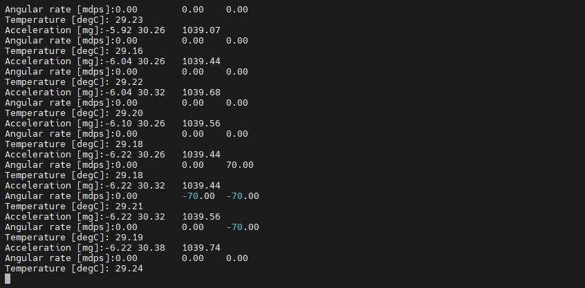

IMU 传感器示例说明
中文 | English
简介
本示例展示了如何在 Titan Board Mini 上使用 LSM6DS3TR-C 六轴 IMU 传感器 实现惯性测量功能,通过 I2C 接口读取 3轴加速度计 和 3轴陀螺仪 数据,结合 RT-Thread 传感器框架 实现完整的传感器数据采集和处理。
主要功能包括：
使用 LSM6DS3TR-C 实现 6 轴惯性测量
读取 3 轴加速度计数据 (X/Y/Z)
读取 3 轴陀螺仪数据 (X/Y/Z)
支持多种量程和采样率配置
集成 RT-Thread 传感器框架
硬件介绍
1. LSM6DS3TR-C IMU 传感器
Titan Board Mini 板载 LSM6DS3TR-C 高性能六轴 IMU 传感器：
参数 |
说明 |
|---|---|
型号 |
LSM6DS3TR-C |
制造商 |
STMicroelectronics (意法半导体) |
类型 |
6 轴 IMU (3轴加速度计 + 3轴陀螺仪) |
接口 |
I2C / SPI |
工作电压 |
1.71V - 3.6V |
温度范围 |
-40°C ~ +85°C |
封装 |
2.5mm x 3mm x 0.83mm LGA-14 |
2. 加速度计特性
LSM6DS3TR-C 内置高性能 3 轴加速度计：
量程选择：±2g / ±4g / ±8g / ±16g
分辨率：16-bit ADC
输出数据率：1.6Hz - 6.66kHz
噪声密度：90μg/√Hz
零偏偏差：±40mg
带宽：可配置 (通常 50Hz - 1.6kHz)
3. 陀螺仪特性
LSM6DS3TR-C 内置高精度 3 轴陀螺仪：
量程选择：±125 / ±250 / ±500 / ±1000 / ±2000 dps
分辨率：16-bit ADC
输出数据率：1.6Hz - 6.66kHz
噪声密度：3.8mdps/√Hz
零偏稳定性：±5dps
带宽：可配置
4. 主要功能
高级功能
FIFO 缓存：9KB FIFO,支持多种模式
中断功能：运动唤醒、自由落体、6D方向检测
传感器融合：内置低功耗传感器融合算法
自检功能：支持自检模式
低功耗模式：多种低功耗工作模式
数据处理
硬件滤波：可配置数字滤波器
数据融合：支持加速度计+陀螺仪数据融合
时间戳：内置时间戳功能
轮询/中断：支持轮询和中断数据读取
软件架构
1. 分层设计
IMU 传感器系统采用分层架构：
应用程序层 (用户代码)
↓
RT-Thread Sensor Framework - 传感器框架
↓
LSM6DS3TR-C Driver - IMU驱动
↓
Sensor HAL - 传感器硬件抽象层
↓
I2C/SPI Driver - I2C/SPI驱动
↓
FSP I2C/SPI HAL - 硬件抽象层
2. 核心组件
移植层接口
需要实现的平台相关接口 (lsm6ds3tr-c_port.c)：
/* I2C 读写接口 */
int32_t platform_write(void *handle, uint8_t reg, const uint8_t *bufp, uint16_t len);
int32_t platform_read(void *handle, uint8_t reg, uint8_t *bufp, uint16_t len);
/* 延时接口 */
void platform_delay(uint32_t ms);
RT-Thread 传感器框架
RT-Thread 提供的统一传感器设备接口：
/* 查找传感器设备 */
rt_device_t rt_device_find(const char *name);
/* 打开传感器设备 */
rt_err_t rt_device_open(rt_device_t dev, rt_uint16_t oflags);
/* 读取传感器数据 */
rt_size_t rt_device_read(rt_device_t dev, rt_off_t pos, void *buffer, rt_size_t size);
/* 接收传感器数据 */
rt_err_t rt_device_set_rx_indicate(rt_device_t dev, rt_err_t (*rx_ind)(rt_device_t dev, rt_size_t size));
3. 工程结构
Titan_Mini_peripheral_imu/
├── src/
│ └── hal_entry.c # 主程序入口 (RGB LED 闪灯演示)
└── packages/
└── lsm6ds3tr/ # LSM6DS3TR-C 驱动包
├── lsm6ds3tr-c_reg.h # 寄存器定义和驱动接口
├── lsm6ds3tr-c_reg.c # 寄存器级驱动实现
└── lsm6ds3tr-c_port.c # 平台移植层 + INIT_APP_EXPORT 自动初始化 + MSH imu 命令
使用说明
1. 工作模式
本工程采用 开机自动初始化 + MSH 命令运行 的模式：
开机时：RT-Thread 启动后由
INIT_APP_EXPORT自动完成 LSM6DS3TR-C 的初始化（含 ID 检测、复位、ODR/满量程/滤波配置），用户无需手动init。开机后：主线程只跑 RGB LED 闪灯演示，IMU 数据读取不自动运行，需要用户在 msh 输入命令才会读传感器。
这样既保证开机流程不被 IMU 采样死循环阻塞，也避免用户忘记初始化。
2. MSH 命令
烧录后,在串口终端（msh />）输入以下命令：
命令 |
说明 |
|---|---|
|
读取并打印一次传感器信息（含姿态解析） |
|
开始周期性采样，可选周期（默认 1000ms，最小 50ms） |
|
停止周期性采样 |
示例：
msh /> imu start 500 # 每 500ms 输出一帧
msh /> imu stop # 停止采样
msh /> imu # 单次打印
3. 数据输出格式
每帧输出包含 3 轴加速度、3 轴角速度、温度，以及解析后的合矢量与姿态角：
------ LSM6DS3TR-C Sample ------
Accel (mg) : X= -12.0 Y= 35.0 Z= 998.0 | |a|= 998.7
Gyro (dps): X= 0.02 Y= -0.01 Z= 0.03 | |w|= 0.04
Temp (C) : 28.45
Tilt (deg): pitch= -0.69 roll= 2.01 (static estimate)
--------------------------------
Accel：三轴加速度 (mg)，
|a|为加速度合矢量（静止时约 1000mg ≈ 1g）Gyro：三轴角速度 (dps)，
|w|为角速度合矢量Temp：板载温度 (℃)
Tilt：由重力分量估算的 pitch / roll 姿态角（仅静止时有效，动态下需结合陀螺仪做融合）
4. 初始化流程说明
开机自动初始化内部完成：
通过 I2C (
i2c1, 7 位地址0x6A) 查找设备并校验 WHO_AM I (期望0x6A)触发软件复位并等待复位完成
打开块数据更新 (BDU)
设置加速度计/陀螺仪 ODR = 12.5Hz，满量程 ±2g / ±2000dps
配置加速度计模拟滤波 + LPF2，陀螺仪带通滤波
初始化成功后打印
[imu] auto-init OK
初始化函数 lsm6ds3_init() 同样导出，可在代码中手动调用（例如改 ODR 后重新初始化）。
配置说明
1. Kconfig 配置
在 libraries/M85_Config/Kconfig 中配置 IMU 选项：
menuconfig BSP_USING_IMU
bool "Enable IMU (LSM6DS3TR-C)"
select BSP_USING_I2C2
default n
if BSP_USING_IMU
config BSP_IMU_I2C_BUS
string "I2C bus name"
default "i2c2"
config BSP_IMU_ACC_ODR
int "Accelerometer ODR (Hz)"
default 104
config BSP_IMU_GYRO_ODR
int "Gyroscope ODR (Hz)"
default 104
endif
2. RT-Thread Settings
在 RT-Thread Studio 中,需要启用以下组件：
设备驱动
启用 I2C 设备驱动
配置 I2C2 接口
传感器
启用 RT-Thread Sensor 框架
启用 Accel (加速度计) 传感器
启用 Gyro (陀螺仪) 传感器
软件包
添加 LSM6DS3TR-C 驱动包
运行效果
1. 开机启动信息
复位 Titan Board Mini 后,串口首先输出系统启动和 IMU 自动初始化信息：
Hello RT-Thread!
==================================================
Titan Mini peripheral IMU demo
- LED RGB blink runs on boot
- LSM6DS3TR-C IMU auto-init on boot, commands:
imu read & print one sample
imu start [ms] start periodic sampling
imu stop stop periodic sampling
==================================================
\ | /
- RT - Thread Operating System
/ | \ 5.x.x build ...
...
[imu] device detected, id=0x6A
[imu] initialized: ODR=12.5Hz, FS=±2g/±2000dps
[imu] auto-init OK, run 'imu' to read sample
msh />
随后 msh 就绪，此时 LED 在跑 RGB 闪灯，IMU 待命。
2. IMU 命令运行效果
输入 imu start 1000 后周期性输出：
